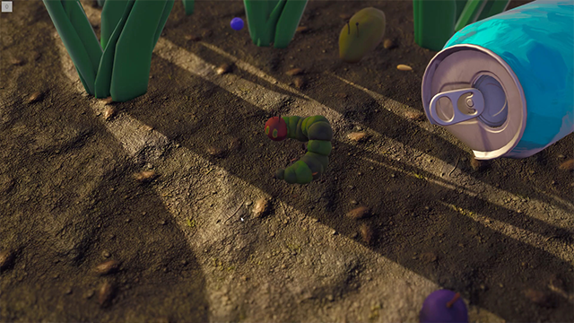
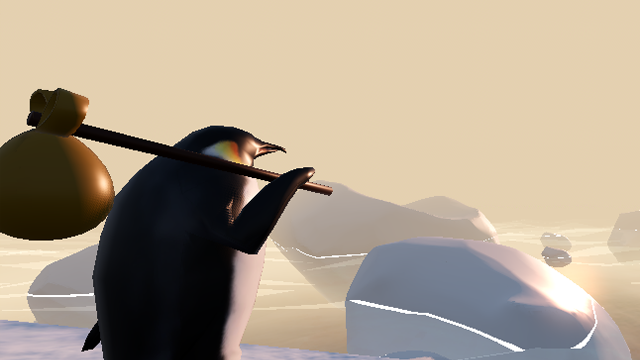

Game Dev

Lamport General Systems
A first-person immersive sim where you manipulate hostile Byzantine fault-tolerant networks through message interception, code injection, and physical sabotage.
Caterpillar Quest
A top-down video game adaptation of The Very Hungry Caterpillar by Eric Carle
Fight or Flight
A 2.5D platformer created for Pitt's 2025 Games for Social Impact Game Jam

Discards
A first-person narrative game built in Godot exploring identity, digital consciousness, and moral responsibility.

Stranger's Path
A short first-person game built in Unity about a stranger arriving in an unfamiliar town.

Dev Log
Ongoing game design journal documenting ideation, prototyping, and development.